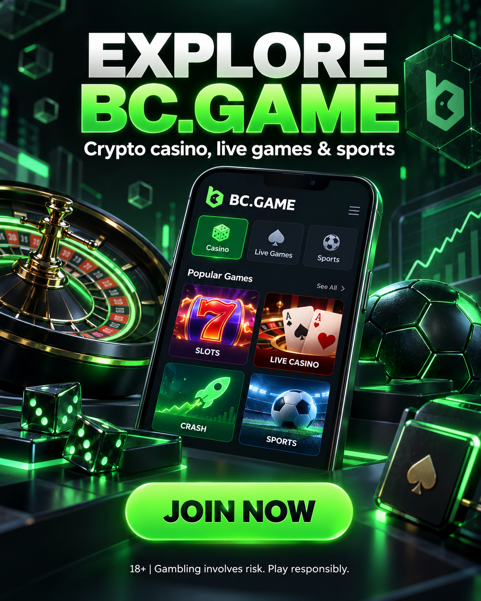

Casino y juegos en vivo
Incluye tragamonedas, juegos de mesa, títulos tipo crash y mesas con crupier. La disponibilidad puede variar por región y proveedor.
GUÍA INDEPENDIENTE · MÉXICO · 18+
Calcula el coste real de un bono, diagnostica un retiro atascado y verifica localmente un server seed. Herramientas gratuitas, sin registro y sin enviar tus datos.
Enlace de afiliado: si te registras mediante este enlace, el autor puede recibir una comisión sin coste adicional para ti.
Revisado el · Fuentes oficiales enlazadas al final.

RESUMEN
Incluye tragamonedas, juegos de mesa, títulos tipo crash y mesas con crupier. La disponibilidad puede variar por región y proveedor.
Antes de enviar fondos, comprueba la red, la moneda, las comisiones y el importe mínimo. Una transferencia a una red incorrecta puede ser irreversible.
La plataforma puede solicitar verificación de identidad y ubicación. Revisa los requisitos antes de depositar y utiliza siempre datos reales.
LISTA DE CONTROL
El juego debe tratarse como entretenimiento, nunca como una forma de ingreso. Define un presupuesto que puedas perder y revisa las condiciones completas.
HERRAMIENTAS GRATUITAS
Calcula rollover, pérdida teórica según RTP, progreso, ritmo diario y rondas mínimas. Genera un enlace con tus parámetros.
Calcular el coste →Indica el estado, TxID, KYC, rollover y red. Recibe pasos ordenados y una lista segura para soporte.
Crear diagnóstico →Calcula SHA-256 en tu navegador y compara el seed revelado con el hash publicado previamente.
Verificar localmente →Fija una pérdida máxima, duración y pausas antes de jugar. Incluye temporizador local y un plan copiable.
Crear mi plan →Cómo consultar los permisos reconocidos por SEGOB y qué señales revisar antes de usar cualquier operador.
Ver comprobaciones →Documentos, coincidencia de datos, motivos habituales de rechazo y precauciones de privacidad.
Preparar el KYC →Por qué moneda y red deben coincidir y cómo evitar una transferencia irreversible.
Comparar redes →TRANSPARENCIA EDITORIAL
Contrastamos las funciones descritas con el centro de ayuda oficial del operador y, para cuestiones regulatorias mexicanas, con la Dirección General de Juegos y Sorteos. Evitamos publicar bonos fijos, límites o comisiones que cambian con frecuencia.
Sin depósitos de pruebaSin garantía de gananciasEnlaces patrocinados identificadosCorrecciones fechadas
Leer metodología, fuentes y aviso de afiliación →PREGUNTAS FRECUENTES
No. Las promociones pueden cambiar y suelen tener requisitos de depósito, apuesta, tiempo y elegibilidad. Consulta siempre las condiciones vigentes en la plataforma.
No existe una ganancia garantizada. Los juegos de azar implican riesgo y la pérdida del dinero depositado es posible.
No. Es una guía independiente que contiene un enlace de afiliado. La información oficial y las condiciones actuales se encuentran en el sitio del operador.
SOLO PARA ADULTOS
Accede únicamente si el juego online está permitido en tu ubicación y puedes asumir el riesgo de perder tu depósito.